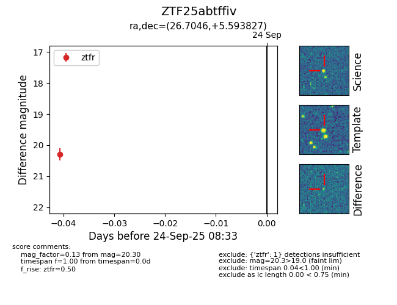

FINK: ZTF25abtffiv
Lasair: ZTF25abtffiv
ALeRCE: ZTF25abtffiv
ZTF25abtffiv (ztf,fink)
equatorial (ra, dec) = (26.7046,+5.59383)
galactic (l, b) = (147.2354,-54.64356)

last ztfr=20.30
1 ztfr detections